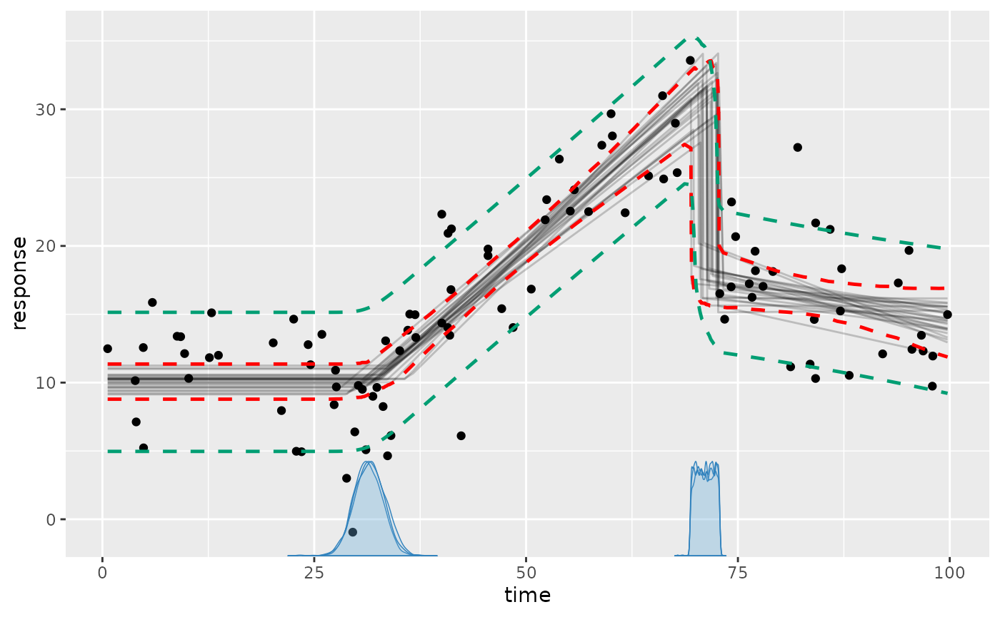
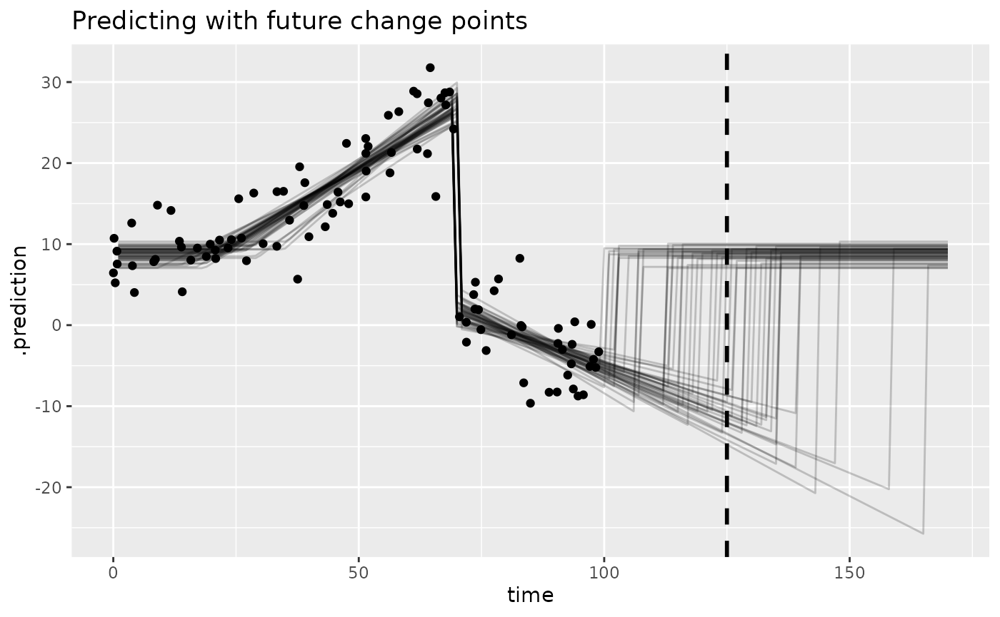

This article introduces predict(),
fitted(), residuals() for in-sample and
out-of-sample data. I will also show how to get creative with
mcp, including how to make predictions around future change
points.
Preparation: an example model
We need an mcpfit to get started. We take the “demo”
dataset:
library(mcp)
future::plan(future::multisession, workers = 3)
set.seed(42) # Make the script deterministic
data = mcp_example_data("demo")
head(data)## response time
## 1 32.842651 68.35820
## 2 -1.160003 87.29038
## 3 27.564248 69.01173
## 4 10.062971 11.59361
## 5 14.056859 19.50091
## 6 18.292640 46.12009… and model it as three segments, i.e., two change points:
# Define the model
model = list(
response ~ 1, # plateau (Intercept_1)
~ 0 + time, # joined slope (time_2) at cp_1
~ 1 + time # disjoined slope (Intercept_3, time_3) at cp_2
)
# Fit it
fit = mcp(model, data = data, seed = 42)This is what the data and inferred fit look like with a 95% central posterior interval for the expected response and an 80% posterior predictive interval:

To review what we see here:
- The black dots is the data from
data. - The gray lines are 25 samples from the posterior (control using
plot(fit, lines = 100)). - The dashed red lines are the 2.5% and 97.% quantiles of the fitted (expected) values.
- The green lines are the 10% and 90% quantiles of the predicted values.
- The blue curves on the x-axis are the posterior distributions of the
change point locations (better viewed using
plot_pars(fit, pars = c("cp_1", "cp_2"))).
Behind the scenes, plot() merely calls
predict() and fitted() to show these
inferences.
Extracting fitted() values
To get the fitted values for each data point, simply do
fitted(fit):
## response time fitted error Q2.5 Q97.5
## 1 32.842651 68.35820 30.374492 1.0363972 28.362893 32.453365
## 2 -1.160003 87.29038 -3.333719 0.7695936 -4.836521 -1.822012
## 3 27.564248 69.01173 30.727352 1.0675322 28.660966 32.861266
## 4 10.062971 11.59361 10.316267 0.7101668 8.907415 11.711335
## 5 14.056859 19.50091 10.316619 0.7096133 8.907914 11.711335
## 6 18.292640 46.12009 18.367438 0.9842136 16.134892 20.014110In general, this output will include:
A column for each predictor column in the data. Here,
timeis the only predictor and you see the values in the same order as indata(which is copied tofit$data). Models with group-level effects additionally include the relevant grouping columns,binomial()models include the number of trials, etc.fitted: The fitted value (posterior mean). When
summary = TRUE(default), the column is calledfitted. Whensummary = FALSE, the column is named.epred, matchingtidybayes::add_epred_draws()conventions.error: The posterior standard deviation of the expected response corresponding to
fitted. Inpredict()output,erroris instead the posterior predictive standard deviation.Q[some number]: The quantiles of the fitted distribution. You can set the quantiles using
fitted(fit, probs = c(0.1, 0.5, 0.9)).
If you compare these values to the plot, you will see that they
correspond. plot() merely calls fitted()
behind the scenes.
Expected responses for out-of-sample data
To predict out-of-sample data, you can simply use the
newdata argument.
newdata = data.frame(time = c(data$time[1], 25, -20, 200))
fitted(fit, newdata = newdata)## time fitted error Q2.5 Q97.5
## 1 68.3582 30.37449 1.0363972 28.362893 32.45336
## 2 25.0000 10.34583 0.6996371 8.964573 11.72535
## 3 -20.0000 10.31627 0.7101668 8.907415 11.71133
## 4 200.0000 -29.86496 10.4838568 -50.879621 -10.31775Note that:
- We get one row per value of
time. - The first value for
timeis in the dataset. The values correspond to the same row infitted(fit)because that’s merely a shortcut to dofitted(fit, newdata = fit$data). - The second value (
time = 20) is within the observed region, but not in the dataset. - The third value (
time = - 20) is outside the observed region, butmcpmerely extends the first segment backwards in time. Because it’s a plateau, we see approximately the same values as fortime = 20. - The fourth value (
time = 200) is way outside the observed region. Because it is the extrapolation of the slope in the third segment of which we’ve only observed the first tiny bit, the posterior distribution is very wide because even a small uncertainty in the slope results in very large differences further out.
Arguments
If you look at the documentation for predict(),
fitted(), and residuals(), you’ll see that
they are quite versatile, taking many different arguments. To mention a
few, you can set fitted(fit, dpar = "sigma") to get fitted
values for sigma more on
modeling sigma, prior = TRUE to predict using only the
prior, and arma = FALSE to exclude AR/MA effects. For
group-level effects, use varying = TRUE (all),
FALSE (none), "cp" or "predictor"
(a formula part), or an exact group-level parameter name.
Predictions
predict() draws from the posterior predictive
distribution and takes almost the same arguments as
fitted(). This supports predictions for in-sample and
out-of-sample data. plot() uses predict()
under the hood for posterior predictive intervals. The values below
correspond to the dashed green lines in the plot (the 80% posterior
predictive interval):
## response time predict error Q10 Q90
## 1 32.842651 68.35820 30.294887 4.166189 25.079655 35.667994
## 2 -1.160003 87.29038 -3.357834 4.083957 -8.551314 1.887155
## 3 27.564248 69.01173 30.783699 4.133812 25.422568 36.031083
## 4 10.062971 11.59361 10.279983 4.058576 5.111081 15.521708
## 5 14.056859 19.50091 10.196888 4.079253 5.111559 15.521964
## 6 18.292640 46.12009 18.374913 4.116569 13.086745 23.638134Note that predict() uses random sampling under the hood,
so these values will differ slightly from call to call. You can make it
replicable using set.seed() as above. In general, the more
posterior draws, the less the call-to-call variance will be. Conversely,
fewer draws means more call-to-call variation, e.g., if you do
predict(fit, ndraws = 10)).
Residuals
residuals() is simply
data$response - fitted(). It may be useful for model
checking, but the typical needs are covered using posterior predictive
checking (pp_check(fit)) and visual inspection of
plot(fit, q_fit = TRUE, q_predict = TRUE).
Forecasting with future change points
Bayesian inference is the principled updating of prior knowledge
using data. Where there is little or now data, the prior speaks louder.
Sometimes, we can learn surprising stuff simply by inspecting the prior
predictive, e.g., how the priors combine when “put through” the model.
In mcp, most functions come with a
prior = FALSE default, but you can simply do
plot(fit, prior = TRUE),
fitted(fit, prior = TRUE), or
predict(fit, prior = TRUE).
Say you want to forecast at time = 125 and you know that
a changepoint to the baseline level (an intercept change to
Intercept_1) will occur approximately after the same
interval as between cp_1 and cp_2 (i.e., at
cp_2 + (cp_2 - cp_1)). Here is a way to “hack”
mcp to do this. (NOTE: I plan on implementing this in a
much more user-friendly way in a future release; see the discussion in
this github
issue and current status in this github
issue).
Step 1: run the model for observed data
We already did that above, resulting in our fit. But we
only do it to get the default priors that are suitable for inferring
change point in this region, so you could’ve just run it without
sampling:
empty = mcp(model, data = data, sample = FALSE)Step 2: add the unobserved segment(s) and fit
Now we extend the model with the future segment of which we have prior knowledge:
And finally, we extend the list of priors with the two new parameters
(time_4 and cp_3). The model needs a predictor
value at the end of the forecasting horizon so that the future change
point remains within its supported range. Its response is missing, so it
contributes no observed outcome. It may be helpful to review the article on priors in mcp.
forecast_horizon = 170
data_forecast = rbind(data, data.frame(time = forecast_horizon, response = NA))
prior_forecast = c(empty$prior, list(
Intercept_4 = "Intercept_1", # Return to this value
cp_3 = paste0("dnorm(cp_2 + (cp_2 - cp_1), 20) T(", max(data$time), ", ", forecast_horizon, ")") # In the future at the same interval
))Now let’s fit it:
fit_forecast = mcp(model_forecast, data = data_forecast, prior = prior_forecast, iter = 5000, seed = 42)Step 3: predict!
We can now compute 50% and 80% posterior predictive intervals at
time = 125:
predict(fit_forecast, newdata = data.frame(time = 125), probs = c(0.1, 0.25, 0.75, 0.9))## time predict error Q10 Q25 Q75 Q90
## 1 125 3.584003 11.17541 -14.25269 -6.761199 11.82396 14.67585To really understand what’s going on here, it may be helpful to visualize the model. For now, we will have to hack this a bit too, manually doing our plot:
# Get expected-response and posterior predictive draws
newdata = data.frame(time = 1:170)
fitted_forecast = fitted(fit_forecast, newdata = newdata, summary = FALSE, ndraws = 50)
predict_forecast = predict(fit_forecast, newdata = newdata, summary = FALSE)
# Plot it
library(ggplot2)
library(tidybayes)
ggplot(predict_forecast, aes(x = time, y = .prediction)) +
# Posterior predictive intervals and line at x = 125
stat_summary(fun.data = median_qi, fun.args = list(.width = 0.8), geom = "ribbon", alpha = 0.2) +
stat_summary(fun.data = median_qi, fun.args = list(.width = 0.5), geom = "ribbon", alpha = 0.3) +
geom_vline(xintercept = 125, lty = 2, lwd = 1) +
# Lines for fitted draws
geom_line(aes(y = .epred, group = .draw), data = fitted_forecast, alpha = 0.2) +
# Observed data
geom_point(aes(x = time, y = response), data = data) +
labs(title = "Predicting with future change points")
You can read the predicted values from above at x = 125
off this graph. We literally just predicted for all values between 1 and
170, and visualized it using a ribbon. This means that you can also
predict further into the future, if you’d like.
You can extend this approach to an arbitrary number of future segments, even using the posterior from the “unobserved” segment 4 in the priors for parameters in future segments. In Bayesian inference, it really does not make much of a difference whether credence in some parameter values have been updated using data or not - it’s all credence.
Without doing this formal model of the future change point, one may
have thought that the change point should occur around
time = 110 since that’s the expected value of
cp_2 + (cp_2 - cp_1). However, we truncated the prior for
the future change point (cp_3) so that it occurs
after the last data point (max(time)), i.e., at
time > 100. This is knowledge that the third change
point had not yet been observed at time = 100, and this
pushes the distribution further into the future (actually around 118;
see summary(fit_forecast)).